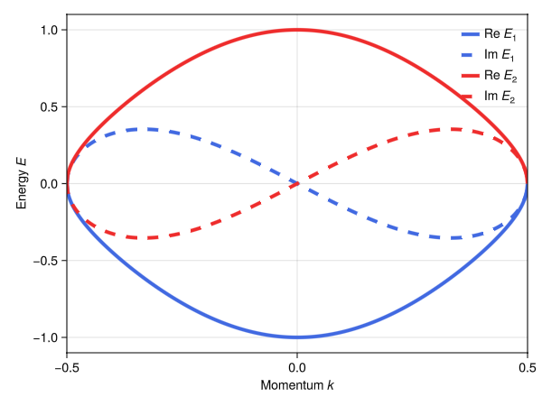
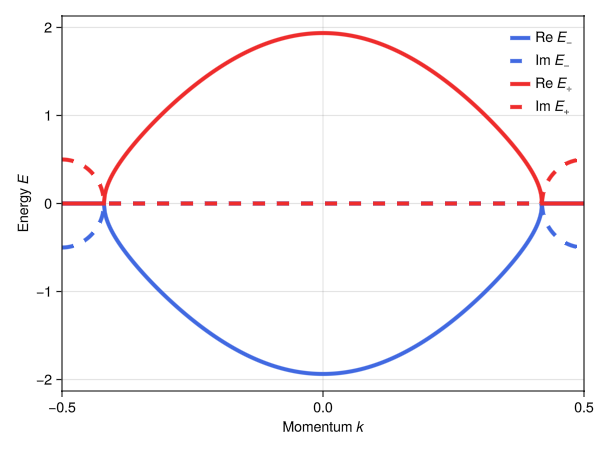
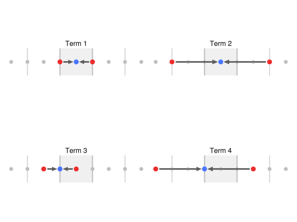
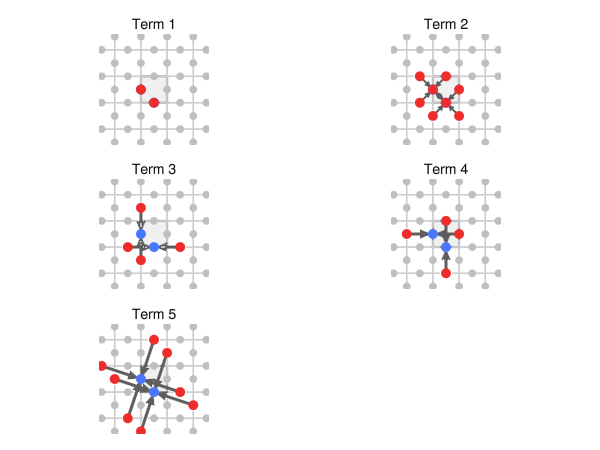
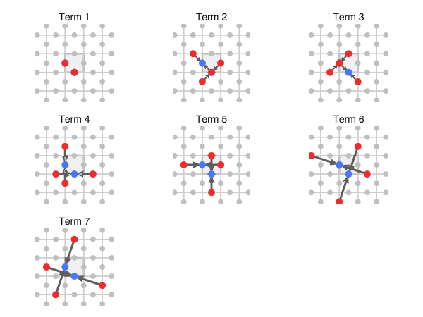

Non-Hermitian tight-binding models
By default, the models returned by tb_hamiltonian are Hermitian. In addition to Hermitian models, however, it is also possible to return anti-Hermitian or generically non-Hermitian (neither Hermitian nor anti-Hermitian) models. Here, we showcase the latter.
Hatano–Nelson model
The archetypical non-Hermitian model is the 1D Hatano–Nelson model, consisting of a single site and nearest-neighbor hoppings, in a setting with only time-reversal symmetry. It is simple to build this model with SymmetricTightBinding.jl:
using Crystalline, SymmetricTightBinding
brs = calc_bandreps(1, 1) # EBRs in line group 1, with time-reversal symmetry
pin_free!(brs, [1=>[0]]) # the 1a Wyckoff position in line group 1 has a free parameter: set to 0 for definiteness
cbr = @composite brs[1] # single-site model
tbm = tb_hamiltonian(cbr, [[1]], NONHERMITIAN) # nearest neighbor hoppings2-term 1×1 TightBindingModel{1} (nonhermitian) over (1a|A):
┌─
1. 𝕖(δ₁)
└─ (1a|A) self-term: δ₁=[1]
┌─
2. 𝕖(δ₁)
└─ (1a|A) self-term: δ₁=[-1]The model is very simple: two different hopping terms, corresponding to left- and right-directed hops. The spatial interpretation can be checked by explicitly visualizing the tight-binding terms:
using GLMakie
plot(tbm)![](data:image/png;base64, iVBORw0KGgoAAAANSUhEUgAAAlgAAAHCCAIAAAC8ESAzAAAAAXNSR0IArs4c6QAAAARnQU1BAACxjwv8YQUAAAAgY0hSTQAAeiYAAICEAAD6AAAAgOgAAHUwAADqYAAAOpgAABdwnLpRPAAAAAlwSFlzAAAOxAAADsQBlSsOGwAAFtpJREFUeAHtwX+M1IWd//HXZ/c9w3xg3B8sywiKziIDG27XC7CL1722bKCGRKJymtMaU5JiFXOG2ENKjG1jw2lsSQwaY6KejX8QwqUSSKCg1LIhatZSIQgs38B3myi/KiMgArvO7szsfi43F5LlgCtlmSL3fj4eFkWRAADwygQAgGMmAAAcMwEA4JgJAADHTAAAOGYCAMAxEwAAjpkAAHDMBACAYyYAABwzAQDgmAkAAMdMAAA4ZgIAwDETAACOmQAAcMwEAIBjJgAAHDMBAOCYCQAAx0wAADhmAgDAMRMAAI6ZAABwzAQAgGMmAAAcMwEA4JgJAADHTAAAOGYCAMAxEwAAjpkAAHDMBACAYyYAABwzAQDgmAkAAMdMAAA4ZgIAwDETAACOmQAAcMwEAIBjJgAAHDMBAOCYCQAAx0wAADhmAgDAMRMAAI6ZAABwzAQAgGMmAAAcMwEA4JgJAADHTACuVD6f7+joGBwc1AVuu+22KVOmqGyOHj0aj8fr6+sFYHhMAK5UEAQvvPDCiRMnJJ08eTKbzU6dOlWSma1evVplE0XRD3/4w6effnr27NkCMDwmAFcqFott27ZNUhRFzz77bEdHx5YtW0aNGiUpCAKVwYkTJw4ePLh58+b33nvv6aefFoBhMwEYhiAIJAUlkpLJpIb46KOPVq1aderUqZkzZz7yyCNVVVVff/31q6+++vDDD7/yyisDAwP33ntvZ2fn7NmzX3vttf7+/gULFmQymZdeeimbzba3tz/22GM638GDBxcvXjw4OCgAV4kJQHls2LDhwQcffPzxx9va2t5888333ntv/fr1QRC8+OKLXV1dR44cmTlzZhRFy5cvX7t27eLFizs6Ou6///5kMvnMM8/U19cvWrSooaHhzjvv1BAzZszo7Oz84osvGhsbBeBqMAEog8HBwX8rWbp0qaT58+e3tLS88847c+fOjaKovr7+rbfeqqio+PDDDwuFwqpVqyZPnjxnzpy333575cqVDzzwwODg4MaNGw8dOqSLCcNQAK4SE4AyyGaze/fufeKJJ1avXq2STCazb9++uXPnSrrrrrsqKipUcuONN06cOFFSMpmMxWJNTU2SKioqwjAUgPIzASiDXC6Xz+c/+OCDWCymkqamJp2TSCQE4JvBBKAM6urqRo8evWDBglmzZqlk06ZNt956qwB8w5gAlEF1dfXdd9+9fPnyN954Y/z48Rs3bly4cOGOHTsE4BvGBOAqCcNQQ6xYsWLRokVTp04dPXp0IpF4/fXXGxsbc7ncTTfdFASBSoIgGDt2rM6ZMGGCzgnDMAgCXUI6nQ6CQACGzQTganjqqaeWLl2qIerr69etW3f48OGzZ8+m0+mRI0dKCsOws7MzCAKVtLa2vv/++2Ym6YYbbti+fbuZqWTt2rVRFOlibrjhhu3btwdBIADDZgJwNVRXV+tiJkyYoPMlEgmdE4/HNUQikdA5YRjq0mKxmABcDSYAABwzAQDgmAkAAMdMZVYsFvfu3VtbW5tOpwWUbNu2LZlMjhgx4pZbbhEgHTp0qL+/v6enp729XUDJZ599durUqebmZjNTOZmAayGKIgFDRFEk4FowAQDgmAkAAMdMAAA4ZgIAwDETAACOmQAAcMwEAIBjJgAAHDMBAOCYCQAAx0wAADhmAgDAMRMAAI6ZAABwzAQAgGMmAAAcMwEA4JgJAADHTAAAOGYCAMAxEwAAjpkAAHDMBACAYyYAABwzAQDgmAkAAMdMAAA4ZgIAwDETAACOmQAAcMwEAIBjJgAAHDMBAOCYCQAAx0wAADhmAgDAMRMAAI6ZAABwzAQAgGMmAAAcMwEA4JgJAADHTAAAOGYCAMAxEwAAjpkAAHDMBACAYyYAABwzAQDgmAn42zpyXNsPJD8/fnrWHWPHjQ9iFulqKBQKsVhMuB7l82FX1+GtW2vGjx9IpyvTaQF/Q6Yy6+npyefzuVyuWCyameBYf0G/3qQtHytfbJF04Pd6Z/fAgu/1NTcUNQxffvllV1fXnj17vv/9748ZM0a4rkQ7dkQvv1z36aff0n85u3lz/L77wiVLgkRCcKxYLOZyuXw+39PTU1NTo3Iylc3AwEB3d3c2m42iKJfLnT59OpPJ1NXVCS5FkV5Zr607NdTh45Ur1418+sHeyTcP6K80MDBw8ODBTz75ZNu2bSoZM2aMcF2Jurqin/5Uvb06J+rv71+zJurtHfX884JXJ0+e7O7u7uvrk7R79+5UKpXJZCorK1UeprL59NNPjx07pnP6+vr2798/ffr0MAwFf3Z1a+tOXejr/uDtDxI/fahXl+3MmTMHDhzYtWtXV1eXhjhz5ozwDVBVVaXLE/37v6u3VxfIb9gQnzcv1tYm+JPL5fbv318oFFQSRdGxY8fMbNKkSSoPU3kUi8VsNqvzFQqFbDabTqcFfzr36VL2H7YTZyrGVA3qfxVF0dGjR/fs2fPuu+/qYn72s58J19qPf/zjqqoqXY5sVnv36hIKHR2xtjbBn2w2WygUdL5sNptOp81MZWAqj3w+XygUdIFcLie4dPKMLqVQVE8uGFOl/10QBCtWrBC+2dLptC7T6dPK53UJg198IbiUy+V0gUKhkM/nzUxlYCqPeDwei8UKhYLOF4ah4FJdlS4lZkqGkf6SKIqWLVu2Z8+ed999V/im+uyzzyZOnKjLUV2teFz5vC6mYuxYwaUwDHWBWCwWj8dVHqbyMLNUKnXkyBENEYvFUqmU4FLb32nTH3RRjROKY6oG9ZcEQXBzybe//e0DBw7s2rWrq6tLQzz33HPCdSSVUnOzdu7UxcRmzxZcSqVSR48eLRQKGiKVSpmZysNUNg0NDcViMZvNRlEkKZFIZDKZMAwFl6ZlNGeGtu7U/zByRPTP3+nTX6Oqqqq1tXX69OkHDx785JNPtm3bppKqqirhuhI8+mi0f796e3W++D33xNraBJfCMGxsbOzu7u7r65MUBEEqlWpoaFDZmMqmsrKysbHxxhtvPHDgQFVVVSaTMTPBqyDQ4n/SyLi2fKx8Uf9tQv3Agu/1Tb55QH+9ysrKiSXt7e1dXV179uw5ceLEmDFjhOtH0NSk55+PXn5Zn36qkmDEiPh994VLlgiO1dXVVVdXd3d3nzlzZsqUKTU1NSonU5klk8l4PB6GoZkJvo2I6V/m655/1Op1Oz4/fnrWHZO+M702ZpGGZ/To0d/97ne/9a1vxWIx4XoTtLQEv/718d///v9v3VozfvwdCxdWptOCe2YWhmFfX18ymVSZmYC/rZvrdceUnlHTqxKJMzGr0VUSi8WE61Q8nmtqqp80qbe3tzKdFvC3ZQIAwDETAACOmQAAcMwEAIBjJgAAHDMBAOCYCQAAx0wAADhmAgDAMRMAAI6ZAABwzAQAgGMmAAAcMwEA4JgJAADHTAAAOGYCAMAxEwAAjpkAAHDMBACAYyYAABwzAQDgmAkAAMdMAAA4ZgIAwDETAACOmQAAcMwEAIBjJgAAHDMBAOCYCQAAx0wAADhmAgDAMRMAAI6ZAABwzAQAgGMmAAAcMwEA4JgJAADHTAAAOGYCAMAxEwAAjpkAAHDMBACAYyYAABwzAQDgmAkAAMdMAAA4ZgIAwDETcC0EQSBgiCAIBFwLpjIzs2nTpgkYor29XcAQzc3NAs6XLlH5mQAAcMwEAIBjJgAAHDMBAOCYCQAAx0wAADhmAgDAMRMAAI6ZAABwzAQAgGMmAAAcMwEA4JgJAADHTAAAOGYCAMAxEwAAjpkAAHDMBACAYyYAABwzAQDgmAkAAMdMAAA4ZgIAwDETAACOmQAAcMwEAIBjJgAAHDMBAOCYCQAAx0wAADhmAgDAMRMAAI6ZAABwzAQAgGMmAAAcMwEA4JgJAADHTAAAOGYCAMAxEwAAjpkAAHDMBACAYyYAABwzAQDgmAkAAMdMAAA4ZgIAwDETAACOmQAAcMwEAIBjJgAAHDMBAOCYCQAAx0wAADhmAgDAMRMAAI6ZAABwzAQAgGMmAAAcMwEA4JgJAADHTAAAOGYCAMAxEwAAjpkAAHDMBACAYyYAABwzAQDgmAkAAMdMAAA4ZgIAwDETAACOmQAAcMwEAIBjJgAAHDMBAOCYCQAAx0wAADhmAgDAMRMAAI6ZAABwzAQAgGMmAAAcMwEA4JgJAADHTAAAOGYCAMAxE4Arlc/nOzo6BgcHdYHbbrttypQpKo+vvvqqt7e3vr4+Ho8LwPCYAFypIAheeOGFEydOSDp58mQ2m506daokM1u9erXK4PTp04sXL/7tb3/b398/YcKEZcuWLVy4UACGwQTgSsVisW3btkmKoujZZ5/t6OjYsmXLqFGjJAVBoDJYvnx5Z2fn7373u1tuuWX9+vU/+tGPbrvttlmzZgnAlTIBGIYgCCQFJZKSyaSG+Oijj1atWnXq1KmZM2c+8sgjVVVVX3/99auvvvrwww+/8sorAwMD9957b2dn5+zZs1977bX+/v4FCxZkMpmXXnopm822t7c/9thjGmJwcHDz5s1LlixpaWmRtGjRojVr1mzevHnWrFkCcKVMAMpjw4YNDz744OOPP97W1vbmm2++995769evD4LgxRdf7OrqOnLkyMyZM6MoWr58+dq1axcvXtzR0XH//fcnk8lnnnmmvr5+0aJFDQ0Nd955p87J5XI/+clPJk6cqJJCoXD27NmqqioBGAYTgDIYHBz8t5KlS5dKmj9/fktLyzvvvDN37twoiurr6996662KiooPP/ywUCisWrVq8uTJc+bMefvtt1euXPnAAw8MDg5u3Ljx0KFDGmLUqFELFy5USU9Pz3PPPXfs2LGHHnpIAIbBBKAMstns3r17n3jiidWrV6skk8ns27dv7ty5ku66666KigqV3HjjjRMnTpSUTCZjsVhTU5OkioqKMAx1CWvWrFm+fHl1dfW6desmTpwoAMNgAlAGuVwun89/8MEHsVhMJU1NTTonkUjoivT09Dz22GMfffTRz3/+8x/84AexWEwAhscEoAzq6upGjx69YMGCWbNmqWTTpk233nqrhmfZsmVHjx7t7OwcN26cAFwNJgBlUF1dfffddy9fvvyNN94YP378xo0bFy5cuGPHDg3DqVOnfvOb36xYseKPf/yjzomiaP78+QJwpUwArpIwDDXEihUrFi1aNHXq1NGjRycSiddff72xsTGXy910001BEKgkCIKxY8fqnAkTJuicMAyDINAQn3/+eV1d3S9+8QsN8eijj86fP18ArpQJwNXw1FNPLV26VEPU19evW7fu8OHDZ8+eTafTI0eOlBSGYWdnZxAEKmltbX3//ffNTNINN9ywfft2M1PJ2rVroyjSEI2Njfv27dP5BgYGBGAYTACuhurqal3MhAkTdL5EIqFz4vG4hkgkEjonDEOdr6JE5zMzARgGEwAAjpkAAHDMBACAY6YyKxaLe/fura2tTafTAkq2bduWTCZHjBhxyy23CJAOHTrU39/f09PT3t4uoOSzzz47depUc3OzmamcTMC1EEWRgCGiKBJwLZgAAHDMBACAYyYAABwzAQDgmAkAAMdMAAA4ZgIAwDETAACOmQAAcMwEAIBjJgAAHDMBAOCYCQAAx0wAADhmAgDAMRMAAI6ZAABwzAQAgGMmAAAcMwEA4JgJAADHTAAAOGYCAMAxEwAAjpkAAHDMBACAYyYAABwzAQDgmAkAAMdMAAA4ZgIAwDETAACOmQAAcMwEAIBjJgAAHDMBAOCYCQAAx0wAADhmAgDAMRMAAI6ZAABwzAQAgGMmAAAcMwEA4JgJAADHTAAAOGYCAMAxEwAAjpkAAHDMVE5Rf3+0c+fUgweDUaMGpMp0WrgOZbPZVCqlq+TIcW0/kPz8+OlZd4wdNz6IWSQAuHZMZVP4wx9yv/rVwJ/+pJJgxIj4ffeFS5YEiYRwXVm2bNmcOXNaWloymUwsFtOV6i/o15u05WPliy2SDvxe7+weWPC9vuaGouBbsURSsVg0M8G9YrGYy+Xy+XxPT09NTY3KyVQexd27e//1X6OeHp0T9ff3r1kT9faOev554XqztaS5ubm1tfX222+vra3VXymK9Mp6bd2poQ4fr1y5buTTD/ZOvnlAcGlwcPDw4cOnT59WyY4dOzKZTF1dneDYyZMnu7u7+/r6JO3evTuVSmUymcrKSpWHqTxyr7wS9fToAvkNG+Lz5sXa2nR5vvrqK+EbY2+JpHnz5s2YMaOhoaGiokKXZ1e3tu7Uhb7uD97+IPHTh3oFl/785z9/+eWXOqevr2///v3Tp08Pw1BwKZfL7d+/v1AoqCSKomPHjpnZpEmTVB6mMhj8/PPirl26hEJHR6ytTZfnySefFL55NpW0tra2tLQ0NTUlk0n9JZ37dCn7D9uJMxVjqgYFZwYGBk6dOqXzFQqFbDabTqcFl7LZbKFQ0Pmy2Ww6nTYzlYGpDKKvvlI+r0sY/OIL4f+Ej0vGjRv3y1/+Un/JyTO6lEJRPblgTJXgTaFQKBaLukAulxO8yuVyukChUMjn82amMjCVQVBTo3hc+bwupmLsWOH/hNbW1paWlqamJl2GuipdSsyUDCPBn1gsZmbFYlHnC8NQ8CoMQ10gFovF43GVh6kMKsaNs2nTitu362Jis2frsr388svCtfbkk0/qfPPmzZsxY0ZDQ0NFRYUuT9vfadMfdFGNE4pjqgYFfyorK2tra48fP64hYrFYKpUSvEqlUkePHi0UChoilUqZmcrDVB7h4sU9+/ZFPT06X/yee2JtbbpsNTU1wjdGc3Nza2vr7bffXltbq7/StIzmzNDWnfofRo6I/vk7fYJX48ePHxgY+PLLL1WSSCQymUwYhoJXYRg2NjZ2d3f39fVJCoIglUo1NDSobEzlYX//96NWrsz96lcDf/qTSoIRI+L33RcuWSJch+bMmdPS0pLJZGKxmK5IEGjxP2lkXFs+Vr6o/zahfmDB9/om3zwgeFVRUXHrrbcODAz09fX19/e3tLSYmeBbXV1ddXV1d3f3mTNnpkyZUlNTo3IylU3sH/7B/uM/ijt3Dh48GIwaVXn77ZXptHAdWrFiRSqV0rCNiOlf5uuef9TqdTs+P3561h2TvjO9NmaR4J6V9Pf3m5kAyczCMOzr60smkyozUzkFI0YEM2f+vzCsra1Np9PC9SmVSunqubled0zpGTW9KpE4E7MaAcA1ZQIAwDETAACOmQAAcMwEAIBjJgAAHDMBAOCYCQAAx0wAADhmAgDAMRMAAI6ZAABwzAQAgGMmAAAcMwEA4JgJAADHTAAAOGYCAMAxEwAAjpkAAHDMBACAYyYAABwzAQDgmAkAAMdMAAA4ZgIAwDETAACOmQAAcMwEAIBjJgAAHDMBAOCYCQAAx0wAADhmAgDAMRMAAI6ZAABwzAQAgGMmAAAcMwEA4JgJAADHTAAAOGYCAMAxEwAAjpkAAHDMBACAYyYAABwzAQDgmAkAAMdMAAA4ZgIAwDETcC0EQSBgiCAIBFwLpjIzs2nTpgkYor29XcAQzc3NAs6XLlH5mQAAcMwEAIBjJgAAHDMBAOCYCQAAx0wAADhmAgDAMRMAAI6ZAABwzAQAgGMmAAAcMwEA4JgJAADHTAAAOGYCAMAxEwAAjpkAAHDMBACAYyYAABwzAQDgmAkAAMdMAAA4ZgIAwDETAACOmQAAcMwEAIBjJgAAHDMBAOCYCQAAx0wAADhmAgDAMRMAAI6ZAABwzAQAgGMmAAAcMwEA4JgJAADHTAAAOGYCAMAxEwAAjpkAAHDMBACAYyYAABwzAQDgmAkAAMdMAAA4ZgIAwDETAACOmQAAcMwEAIBj/wnk/qr0sOibKwAAAABJRU5ErkJggg==)
It is the absence of hermiticity that allows the hopping amplitudes to differ in the two directions, in clear contrast to the Hermitian case:
tb_hamiltonian(cbr, [[1]], HERMITIAN)1-term 1×1 TightBindingModel{1} (hermitian) over (1a|A):
┌─
1. 𝕖(δ₁)+𝕖(δ₂)
└─ (1a|A) self-term: δ₁=[1], δ₂=-δ₁Of course, the non-Hermitian model reduces to the Hermitian model when the left- and right-directed hopping amplitudes are equal. However, when the two amplitudes are unequal, the Hatano–Nelson model features nontrivial spectral winding in the sense that its spectrum traces out a finite-area spectral loop in the complex plane as its momentum is varied across one loop. We can see this by visualizing the complex energy as we vary $k$ from -1/2 to 1/2:
ptbm = tbm([0.8, 1.2]) # left & right hopping amplitudes of 0.8 and 1.2, respectively
ks = range(-1/2, 1/2, 500) # 500 sampling points in k
Es = spectrum(ptbm, ks) # 500×1 matrix
Es = vec(Es) # convert to vector
update_theme!(linewidth = 4)
lines(real(Es), imag(Es); axis = (; autolimitaspect = 1))
The loop is associated with a quantized spectral winding $\nu = (2\pi \mathrm{i})^{-1}\oint \mathrm{d}k\, \partial_k \log E(k) = \pm 1$ when the two hopping amplitudes are unequal.
Breaking time-reversal symmetry
We can also create models that do not assume time-reversal symmetry. In our context, this allows additional hopping terms, differing only from the time-reversal symmetric Hatano–Nelson terms by having overall imaginary prefactor:
brs_notr = calc_bandreps(1, 1; timereversal=false) # EBRs in line group 1, without time-reversal symmetry
pin_free!(brs_notr, [1=>[0]])
tbm_notr = tb_hamiltonian((@composite brs_notr[1]), [[0], [1]], NONHERMITIAN) # on-site terms _and_ nearest-neighbor hoppings6-term 1×1 TightBindingModel{1} (nonhermitian) over (1a|A):
┌─
1. 1
└─ (1a|A) self-term
┌─
2. i1
└─ (1a|A) self-term
┌─
3. 𝕖(δ₁)
└─ (1a|A) self-term: δ₁=[1]
┌─
4. i𝕖(δ₁)
└─ (1a|A) self-term: δ₁=[1]
┌─
5. 𝕖(δ₁)
└─ (1a|A) self-term: δ₁=[-1]
┌─
6. i𝕖(δ₁)
└─ (1a|A) self-term: δ₁=[-1]Two-band Hatano–Nelson-like model with exceptional points
We can generalize the single-band Hatano–Nelson model from above simply by constructing a two-band model, with two orbitals placed at the unit cell center. To do so, we simply include two copies of the same EBR in the composite band representation provided to tb_hamiltonian: each copy is treated as a separate physical orbital.
cbr = @composite 2brs[1]
tbm = tb_hamiltonian(cbr, [[0], [1]], Val(NONHERMITIAN))
summary(tbm)"10-term 2×2 TightBindingModel{1} (nonhermitian) over (1a|A)⊕(1a|A)"The resulting model has 10 free terms: the first 6 are self-couplings (self-energies and intercell hoppings between the same physical orbital); the last 4 are hoppings between the two distinct orbitals. We restrict the model to this subset in the interest of simplicity:
tbm = tbm[7:10]4-term 2×2 TightBindingModel{1} (nonhermitian) over (1a|A)⊕(1a|A):
┌─
1. ⎡ 0 │ 1 ⎤
│ ⎢ ───┼─── ⎥
│ ⎣ 0 │ 0 ⎦
└─ (1a|A)↔(1a|A)
┌─
2. ⎡ 0 │ 𝕖(δ₁) ⎤
│ ⎢ ───┼─────── ⎥
│ ⎣ 0 │ 0 ⎦
└─ (1a|A)↔(1a|A): δ₁=[1]
┌─
3. ⎡ 0 │ 0 ⎤
│ ⎢ ───┼─── ⎥
│ ⎣ 1 │ 0 ⎦
└─ (1a|A)↔(1a|A)
┌─
4. ⎡ 0 │ 0 ⎤
│ ⎢ ───────┼─── ⎥
│ ⎣ 𝕖(δ₁) │ 0 ⎦
└─ (1a|A)↔(1a|A): δ₁=[-1]The four terms span a model of the kind:
\[\mathbf{H}(k) = \begin{bmatrix} 0 & t_1 + t_2 \mathrm{e}^{2\pi\mathrm{i}k} \\ t_1' + t_2' \mathrm{e}^{-2\pi\mathrm{i}k} & 0 \end{bmatrix},\]
with intercell hoppings $t_2^{(\prime)}$ and intracell hoppings $t_1^{(\prime)}$. A specific instance of this model can be created from tbm via tbm([t₁, t₂, t₁′, t₂′]).
A simple special case – but interesting, as we will see – is equal inter- and intracell hoppings from orbital 2 to orbital 1 ($2\rightarrow 1$ hopping), i.e., $t_1 = t_2 = 1$, fully suppressed intercell $1 \rightarrow 2$ hopping, i.e., $t_2' = 0$ and free intracell $1 \rightarrow 2$ hopping, i.e., $t_1' = t$. With this restriction, the model features an exceptional point (band degeneracy without a complete associated eigenfunction basis), occurring when $t_1 + t_2 \mathrm{e}^{2\pi\mathrm{i}k} = 1 + \mathrm{e}^{2\pi\mathrm{i}k} = 0$, i.e., when $\mathrm{e}^{2\pi\mathrm{i}k} = -1 \Leftrightarrow k = \pm 1/2$ (the BZ edge). At the exceptional point, the Bloch Hamiltonian is defective in the sense that it is similar to a Jordan block $\big[\begin{smallmatrix} 0 & 1 \\ 0 & 0\end{smallmatrix}\big]$:
t = .5 # intracell 1→2 hopping amplitude t₁′
t₁, t₂, t₁′, t₂′ = 1, 1, t, 0
ptbm = tbm([t₁, t₂, t₁′, t₂′])
ptbm([1/2]) # evaluate the Bloch Hamiltonian at k = 1/22×2 Matrix{ComplexF64}:
0.0+0.0im 0.0+0.0im
0.5+0.0im 0.0+0.0imWe can visualize the resulting spectrum of the model over the Brillouin zone to learn more:
ks = range(-1/2, 1/2, 500)
Es = spectrum(ptbm, ks)
Es_re = real(Es) # real parts
Es_im = imag(Es) # imaginary parts
faxp = lines(ks, Es_re[:,1]; color=:royalblue, label = "Re " * rich("E", font=:italic) * subscript("1"))
lines!(ks, Es_im[:,1]; color=:royalblue, label = "Im " * rich("E", font=:italic) * subscript("1"), linestyle=:dash)
lines!(ks, Es_re[:,2]; color=:firebrick2, label = "Re " * rich("E", font=:italic) * subscript("2"))
lines!(ks, Es_im[:,2]; color=:firebrick2, label = "Im " * rich("E", font=:italic) * subscript("2"), linestyle=:dash)
faxp.axis.xlabel = "Momentum " * rich("k", font=:italic)
faxp.axis.ylabel = "Energy " * rich("E", font=:italic)
axislegend(faxp.axis; framevisible=false)
xlims!(-1/2, 1/2)
The spectrum is degenerate at $k = \pm 1/2$ as expected, generally complex, and exhibiting both time-reversal symmetry $E_1(k) = E_2(-k)^*$ and ``accidental'' particle-hole symmetry $E_1(k) = -E_2(k)$ (resulting from our restriction to a small set of hopping hoppings terms).
Exceptional points with PT symmetry
Exceptional points are especially interesting in contexts where the Hamiltonian is not only non-Hermitian but also PT-symmetric (inversion and time). The previous Hatano–Nelson-like model, however, is T-symmetric (by default, calc_bandreps assumes time-reversal symmetry, and this assumption is propagated via brs and cbr to tb_hamiltonian) but inversion-broken, and so lacks PT-symmetry.
We can build a variant, however, that breaks both P and T but retains PT symmetry. To do so, first construct the terms of a time-reversal model, starting now with a set of time-reversal broken EBRs:
brs = calc_bandreps(1, 1; timereversal=false) # a single EBR, as before, but now without assumption of time-reversal
pin_free!(brs, [1=>[0]]) # as before, pin free parameters of the EBR's Wyckoff position
cbr = @composite 2brs[1]
tbm = tb_hamiltonian(cbr, [[0], [1]], Val(NONHERMITIAN))
summary(tbm)"20-term 2×2 TightBindingModel{1} (nonhermitian) over (1a|A)⊕(1a|A)"The resulting model has no less than 20 possible terms: simply due to being a fully unconstrained problem – lacking both Hermitian, spatial, and time-reversal symmetry. We pick a small subset of these terms, with the aim of building a simple model. In particular, we retain imaginary onsite terms and the terms in our previous reduced model:
onsite_terms = [2, 8]
hopping_terms = [13, 15, 17, 19]
tbm = tbm[vcat(onsite_terms, hopping_terms)]6-term 2×2 TightBindingModel{1} (nonhermitian) over (1a|A)⊕(1a|A):
┌─
1. ⎡ i1 │ 0 ⎤
│ ⎢ ────┼─── ⎥
│ ⎣ 0 │ 0 ⎦
└─ (1a|A) self-term
┌─
2. ⎡ 0 │ 0 ⎤
│ ⎢ ───┼──── ⎥
│ ⎣ 0 │ i1 ⎦
└─ (1a|A) self-term
┌─
3. ⎡ 0 │ 1 ⎤
│ ⎢ ───┼─── ⎥
│ ⎣ 0 │ 0 ⎦
└─ (1a|A)↔(1a|A)
┌─
4. ⎡ 0 │ 𝕖(δ₁) ⎤
│ ⎢ ───┼─────── ⎥
│ ⎣ 0 │ 0 ⎦
└─ (1a|A)↔(1a|A): δ₁=[1]
┌─
5. ⎡ 0 │ 0 ⎤
│ ⎢ ───┼─── ⎥
│ ⎣ 1 │ 0 ⎦
└─ (1a|A)↔(1a|A)
┌─
6. ⎡ 0 │ 0 ⎤
│ ⎢ ───────┼─── ⎥
│ ⎣ 𝕖(δ₁) │ 0 ⎦
└─ (1a|A)↔(1a|A): δ₁=[-1]The span of these terms result in a Bloch Hamiltonian:
\[\mathbf{H}(k) = \begin{bmatrix} \mathrm{i}\gamma_1 & t_1 + t_2 \mathrm{e}^{2\pi\mathrm{i}k} \\ t_1' + t_2' \mathrm{e}^{-2\pi\mathrm{i}k} & \mathrm{i}\gamma_2 \end{bmatrix}.\]
Choosing $\gamma_1 = -\gamma_2 = \gamma$, $t_1 = t_1'$, and $t_2 = t_2'$ we obtain a PT symmetric model:
\[\mathbf{H}(k) = \begin{bmatrix} \mathrm{i}\gamma & t_1 + t_2 \mathrm{e}^{2\pi\mathrm{i}k} \\ t_1 + t_2 \mathrm{e}^{-2\pi\mathrm{i}k} & -\mathrm{i}\gamma \end{bmatrix}.\]
The spectrum of the model is $E_\pm(k) = \sqrt{|t_1+t_2\mathrm{e}^{2\pi\mathrm{i}k}|^2 - \gamma^2}$, which is degenerate – in fact, exceptional – when $|t_1+t_2\mathrm{e}^{2\pi\mathrm{i}k}| = \gamma$ (assuming $\gamma>0$). The spectrum is qualitatively distinct before and after the exceptional point:
- When $|t_1+t_2\mathrm{e}^{2\pi\mathrm{i}k}| > \gamma$: $E_\pm(k)$ is real (PT-unbroken phase).
- When $|t_1+t_2\mathrm{e}^{2\pi\mathrm{i}k}| < \gamma$: $E_\pm(k)$ is imaginary (spontaneously broken PT-symmetry).
We can see this readily by constructing the associated Hamiltonian from tbm, noting that tbm([γ₁, γ₂, t₁, t₂, t₁′, t₂′]) corresponds to the general model and tbm([γ, -γ, t₁, t₂, t₁, t₂]) to the PT-symmetric one:
γ, t₁, t₂ = 0.5, 1, 1
ptbm = tbm([γ, -γ, t₁, t₂, t₁, t₂])
# calculate spectrum
ks = range(-1/2, 1/2, 500)
Es = spectrum(ptbm, ks)
Es_re = real(Es) # real parts
Es_im = imag(Es) # imaginary parts
Es_re = sort(Es_re; dims=2) # necessary to explicitly sort for visualization, due to intrinsic
Es_im = sort(Es_im; dims=2) # difficulty of sorting floating-point rounded complex numbers
# plot spectrum
f = Figure()
ax = Axis(f[1,1])
lines!(ks, Es_re[:,1]; color=:royalblue, label="Re " * rich("E", font=:italic) * subscript("−"))
lines!(ks, Es_im[:,1]; color=:royalblue, label="Im " * rich("E", font=:italic) * subscript("−"), linestyle=:dash)
lines!(ks, Es_re[:,2]; color=:firebrick2, label="Re " * rich("E", font=:italic) * subscript("+"))
lines!(ks, Es_im[:,2]; color=:firebrick2, label="Im " * rich("E", font=:italic) * subscript("+"), linestyle=:dash)
ax.xlabel = "Momentum " * rich("k", font=:italic)
ax.ylabel = "Energy " * rich("E", font=:italic)
axislegend(ax; framevisible=false)
xlims!(-1/2, 1/2)
Non-Hermitian SSH model
The non-Hermitian SSH (Su-Schrieffer-Heeger) model generalizes the standard Hermitian SSH model by allowing left- and right-directed inter-sublattice hoppings to take independent values. We construct it in line group 2, which has inversion symmetry and two inequivalent Wyckoff positions per unit cell, 1a and 1b. By placing an $s$-like orbital at each position, we obtain the usual sublattice construction of the SSH model:
# (1b|A′) ⊕ (1a|A′) in 1D line group 2 (inversion symmetry); with intra-cell hoppings & onsite terms
brs = calc_bandreps(2, 1)
cbr = @composite brs[1] + brs[3]
tbm = tb_hamiltonian(cbr, [[0], [2]], Val(NONHERMITIAN))
tbm = tbm[5:8] # retain only inter-orbital (offdiagonal) terms for simplicity4-term 2×2 TightBindingModel{1} (nonhermitian) over (1b|A′)⊕(1a|A′):
┌─
1. ⎡ 0 │ 𝕖(δ₁)+𝕖(δ₂) ⎤
│ ⎢ ───┼───────────── ⎥
│ ⎣ 0 │ 0 ⎦
└─ (1b|A′)↔(1a|A′): δ₁=[-1/2], δ₂=-δ₁
┌─
2. ⎡ 0 │ 𝕖(δ₁)+𝕖(δ₂) ⎤
│ ⎢ ───┼───────────── ⎥
│ ⎣ 0 │ 0 ⎦
└─ (1b|A′)↔(1a|A′): δ₁=[3/2], δ₂=-δ₁
┌─
3. ⎡ 0 │ 0 ⎤
│ ⎢ ─────────────┼─── ⎥
│ ⎣ 𝕖(δ₁)+𝕖(δ₂) │ 0 ⎦
└─ (1a|A′)↔(1b|A′): δ₁=[1/2], δ₂=-δ₁
┌─
4. ⎡ 0 │ 0 ⎤
│ ⎢ ─────────────┼─── ⎥
│ ⎣ 𝕖(δ₁)+𝕖(δ₂) │ 0 ⎦
└─ (1a|A′)↔(1b|A′): δ₁=[-3/2], δ₂=-δ₁Terms 1–4 are intra-orbital (on-site terms and same-orbital next-nearest-neighbor inter-cell hoppings). We retain only the inter-orbital terms (terms 5–8; nearest- and next-nearest-neighbor terms). The Bloch Hamiltonian of tbm([t₁, t₂, t₁′, t₂′]) is:
\[\mathbf{H}(k) = 2\begin{bmatrix} 0 & t_1\cos(\tfrac{1}{2}\pi k) + t_2 \cos(\tfrac{3}{2}\pi k) \\ t_1'\cos(\tfrac{1}{2}\pi k) + t_2' \cos(\tfrac{3}{2}\pi k) & 0 \end{bmatrix},\]
with $(t_1, t_2)$ and $(t_1', t_2')$ the two independent pairs of inter-sublattice hoppings (in the two directions) and $k$ specified in Cartesian coordaintes. Hermiticity is recovered when $t_{1,2} = t_{1,2}'$, reducing to the standard SSH model with nearest-neighbor intracell hopping $t_1$ and next-nearest neighbor intracell hopping $t_2$.
We can visualize the associated terms via Makie:
plot(tbm)
It is instructive to compare the hopping terms in our non-Hermitian SSH model with its Hermitian counterpart:
tbm_H = tb_hamiltonian(cbr, [[0], [2]], Val(HERMITIAN))
tbm_H = tbm_H[5:6] # retain only inter-orbital (offdiagonal) terms2-term 2×2 TightBindingModel{1} (hermitian) over (1b|A′)⊕(1a|A′):
┌─
1. ⎡ 0 │ 𝕖(δ₁)+𝕖(δ₂) ⎤
│ ⎢ ───────────────┼───────────── ⎥
│ ⎣ 𝕖(-δ₁)+𝕖(-δ₂) │ 0 ⎦
└─ (1b|A′)↔(1a|A′): δ₁=[-1/2], δ₂=-δ₁
┌─
2. ⎡ 0 │ 𝕖(δ₁)+𝕖(δ₂) ⎤
│ ⎢ ───────────────┼───────────── ⎥
│ ⎣ 𝕖(-δ₁)+𝕖(-δ₂) │ 0 ⎦
└─ (1b|A′)↔(1a|A′): δ₁=[3/2], δ₂=-δ₁plot(tbm_H)![Example block output]()
From which we see that the breaking of Hermiticity splits tbm_H[1] across tbm[1] and tbm[3], while tbm_H[2] is split across tbm[2] and tbm[4]. In other words, Hermiticity is restored in tbm for models tbm([t₁, t₂, t₁, t₂]).
We might e.g., explore the band structure (and associated exceptional points) for a non-Hermitian configuration, wherein a Hermitian nearest- and next-nearest neighbor hopping configuration (of equal amplitudes), is perturbed by a finite non-Hermitian asymmetry (of opposite sign in the nearest- and next-nearest terms):
Δ₁ = -0.3 # nearest-neighbor non-Hermitian asymmetry
Δ₂ = 0.3 # next-nearest-neighbor ━━━━━━━ ┃┃ ━━━━━━━
t₁ = 1 # nearest-neighbor Hermitian amplitude
t₂ = 1 # next-nearest neighbor ━━━━━ ┃┃ ━━━━━
ptbm = tbm([t₁+Δ₁, t₂+Δ₂, t₁-Δ₁, t₂-Δ₂]) # asymmetric hopping pattern
# calculate spectrum
ks = range(-1/2, 1/2, 500)
Es = spectrum(ptbm, ks)
Es_re = real(Es) # real parts
Es_im = imag(Es) # imaginary parts
Es_re = sort(Es_re; dims=2) # necessary to explicitly sort for visualization, due to intrinsic
Es_im = sort(Es_im; dims=2) # difficulty of sorting floating-point rounded complex numbers
# plot spectrum
f = Figure()
ax = Axis(f[1,1])
lines!(ks, Es_re[:,1]; color=:royalblue, label="Re " * rich("E", font=:italic) * subscript("−"))
lines!(ks, Es_im[:,1]; color=:royalblue, label="Im " * rich("E", font=:italic) * subscript("−"), linestyle=:dash)
lines!(ks, Es_re[:,2]; color=:firebrick2, label="Re " * rich("E", font=:italic) * subscript("+"))
lines!(ks, Es_im[:,2]; color=:firebrick2, label="Im " * rich("E", font=:italic) * subscript("+"), linestyle=:dash)
ax.xlabel = "Momentum " * rich("k", font=:italic)
ax.ylabel = "Energy " * rich("E", font=:italic)
axislegend(ax; framevisible=false)
xlims!(-1/2, 1/2)
2D model: exceptional lines in p4
We can also construct more complicated examples where symmetry plays a role. Consider for example a non-Hermitian model on a 2D lattice with p4 symmetry, obtained by placing s-like orbitals at the two symmetry-related edges of the unit cell (i.e., a (2c|A) orbital):
brs = calc_bandreps(10, 2)
cbr = @composite brs[1] # pick the (2c|A) EBR
tbm_H = tb_hamiltonian(cbr, [[0,0], [1,0]], Val(HERMITIAN))
tbm_NH = tb_hamiltonian(cbr, [[0,0], [1,0]], Val(NONHERMITIAN))7-term 2×2 TightBindingModel{2} (nonhermitian) over (2c|A):
┌─
1. ⎡ 1 0 ⎤
│ ⎣ 0 1 ⎦
└─ (2c|A) self-term
┌─
2. ⎡ 0 𝕖(δ₃)+𝕖(δ₄) ⎤
│ ⎣ 𝕖(δ₁)+𝕖(δ₂) 0 ⎦
└─ (2c|A) self-term: δ₁=[1/2,-1/2], δ₂=-δ₁, δ₃=[1/2,1/2], δ₄=-δ₃
┌─
3. ⎡ 0 𝕖(δ₁)+𝕖(δ₂) ⎤
│ ⎣ 𝕖(δ₃)+𝕖(δ₄) 0 ⎦
└─ (2c|A) self-term: δ₁=[1/2,-1/2], δ₂=-δ₁, δ₃=[1/2,1/2], δ₄=-δ₃
┌─
4. ⎡ 𝕖(δ₁)+𝕖(δ₂) 0 ⎤
│ ⎣ 0 𝕖(δ₃)+𝕖(δ₄) ⎦
└─ (2c|A) self-term: δ₁=[1,0], δ₂=-δ₁, δ₃=[0,1], δ₄=-δ₃
┌─
5. ⎡ 𝕖(δ₃)+𝕖(δ₄) 0 ⎤
│ ⎣ 0 𝕖(δ₁)+𝕖(δ₂) ⎦
└─ (2c|A) self-term: δ₁=[1,0], δ₂=-δ₁, δ₃=[0,1], δ₄=-δ₃
┌─
6. ⎡ 0 𝕖(δ₃)+𝕖(δ₄) ⎤
│ ⎣ 𝕖(δ₁)+𝕖(δ₂) 0 ⎦
└─ (2c|A) self-term: δ₁=[3/2,-1/2], δ₂=-δ₁, δ₃=[1/2,3/2], δ₄=-δ₃
┌─
7. ⎡ 0 𝕖(δ₁)+𝕖(δ₂) ⎤
│ ⎣ 𝕖(δ₃)+𝕖(δ₄) 0 ⎦
└─ (2c|A) self-term: δ₁=[3/2,-1/2], δ₂=-δ₁, δ₃=[1/2,3/2], δ₄=-δ₃It is instructive to compare the Hermitian and non-Hermitian models to discern which terms are genuinely nonhermitian:
plot(tbm_H)
plot(tbm_NH)
The non-Hermitian model's terms tbm_NH[2:3] (and tbm[6:7]) evidently break Hermiticity and correspond to the non-Hermitian splitting of tbm_H[2] (and tbm_H[5]). We can verify that the model hosts exceptional lines in this case:
tbm = tbm_NH[2:3] # retain only terms 2 and 3
ptbm_NH = tbm([1.2, 0.8]) # 1.2 vs. 0.8 hopping asymmetry
ks = range(-1/2, 1/2, 201)
Em = [spectrum_single_k(ptbm_NH, [k1, k2]) for k1 in ks, k2 in ks]
# sort the real and imaginary parts of the energies for plotting purposes
Em_re = [sort(real(_Es)) for _Es in Em]
Em_im = [sort(imag(_Es)) for _Es in Em]
Es_re_1 = getindex.(Em_re, 1) # band 1
Es_im_1 = getindex.(Em_im, 1)
Es_re_2 = getindex.(Em_re, 2) # band 2
Es_im_2 = getindex.(Em_im, 2)
# plotting configurations
E_label = rich("E", font=:italic) * subscript("±")
axis_args = (;
aspect = (1,1,.75),
xautolimitmargin = (0,0), yautolimitmargin = (0,0),
xlabel = rich("k"; font=:italic) * subscript("1"), xlabeloffset = 10,
ylabel = rich("k"; font=:italic) * subscript("2"), ylabeloffset = 10,
zlabeloffset = 35,
xticks = [-1/2, 0, 1/2], xticklabelsvisible = false,
yticks = [-1/2, 0, 1/2], yticklabelsvisible = false
)
colorbar_args = (; vertical = false, height = 8, ticklabelsize = 12)
shininess = 1.0
lims_re = extrema(Iterators.flatten(Em_re))
lims_im = extrema(Iterators.flatten(Em_im))
# plot the real and imaginary energy surfaces across the BZ
f = Figure(size=(600,280), figure_padding=(20,0,0,5))
rowgap!(f.layout, 0)
ax1 = Axis3(f[2,1]; zlabel="Re "*E_label, axis_args...)
p1 = surface!(ks, ks, Es_re_1; colormap=:PiYG_8, colorrange=lims_re, shininess)
surface!( ks, ks, Es_re_2; colormap=:PiYG_8, colorrange=lims_re, shininess)
zlims!(ax1, lims_re)
Colorbar(f[1,1], p1; ticks=([.9999*lims_re[1], 0, .9999*lims_re[2]], ["min", "0", "max"]), colorbar_args...)
ax2 = Axis3(f[2,2]; zlabel="Im "*E_label, axis_args...)
p2 = surface!(ks, ks, Es_im_1; colormap=:RdBu_8, colorrange=lims_im, shininess)
surface!( ks, ks, Es_im_2; colormap=:RdBu_8, colorrange=lims_im, shininess)
zlims!(ax2, lims_re)
Colorbar(f[1,2], p2; ticks=([.9999*lims_im[1], 0, .9999*lims_im[2]], ["min", "0", "max"]), colorbar_args...)